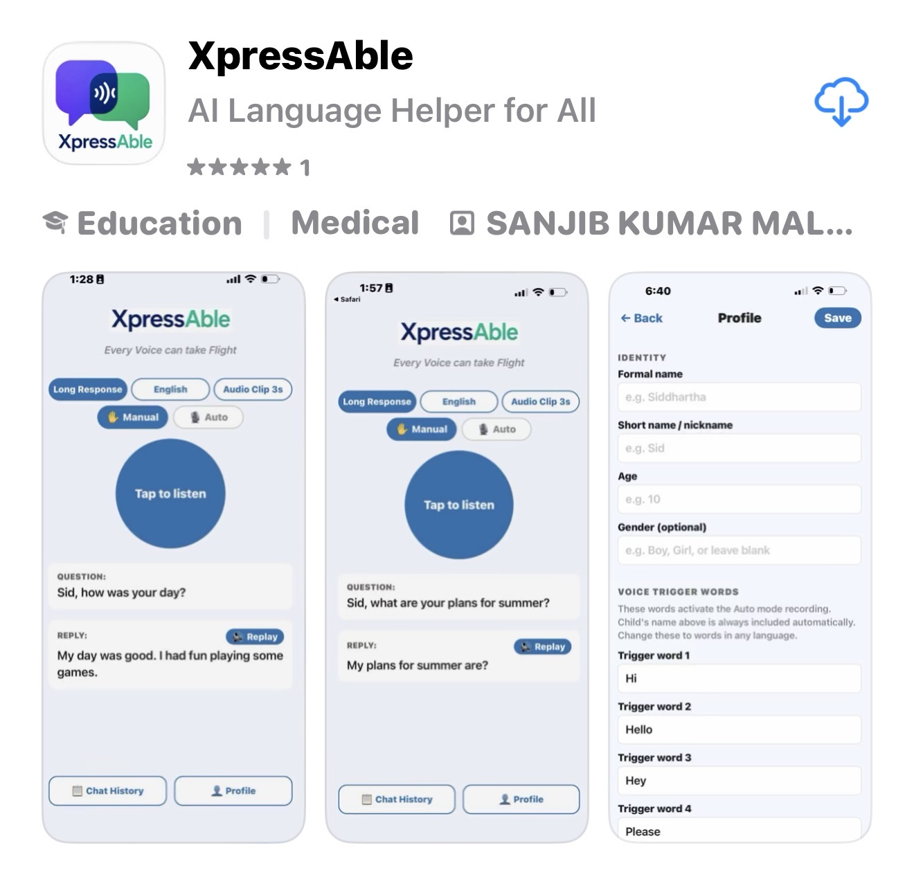
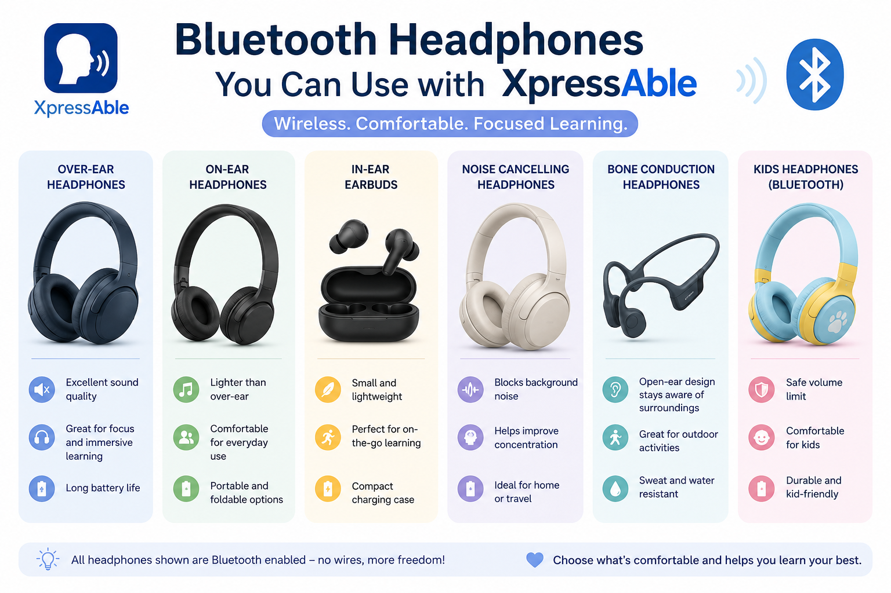
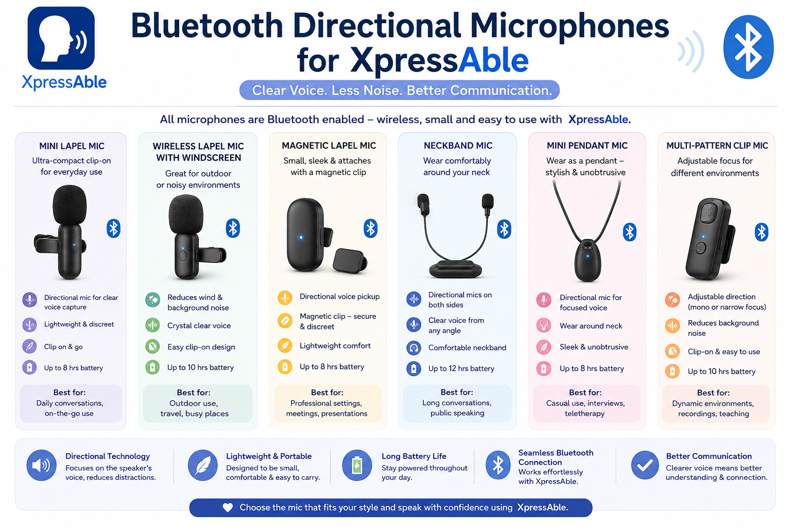

A step-by-step guide — from installing the app to choosing the right headphones and microphone, building a profile that helps the AI respond well, and getting the most out of every conversation.
XpressAble is available as a free download on the App Store for iPhone (iOS). Search for XpressAble or use the direct App Store link, then install it like any other app.

Once installed, open the app and you'll be guided into setting up your first profile — that's Step 5 below, so feel free to skip ahead and come back to headphones and microphones once you've seen the basics.
How you set things up depends mainly on one question: will the phone stay with a parent or caregiver, or will the child or person in care carry their own phone?
A parent or caregiver installs and sets up XpressAble on their own phone. The child simply wears the headphones — ideally a Bluetooth pair — connected back to that phone. The child doesn't need to touch the app at all; the parent manages listening and playback nearby.
Once a child or person in care has their own phone, install XpressAble directly on it. Both the directional microphone and the headphones connect to their device, so they can listen, tap, and respond independently, wherever they are.
Neither path is "better" — they're built for different stages of independence. Many families start on the left and move to the right over time.
We prefer Bluetooth headphones over wired ones — no cable to catch on furniture or pull loose mid-conversation, and they work whether the phone is in a parent's pocket or the child's own hands.
The pair we've tested and used ourselves is the Shokz OpenRun, a bone-conduction design that sits just outside the ear canal. We like it because the child hears the suggested response clearly while remaining fully aware of the room around them — nothing is blocked from either ear.

A good directional microphone matters more than people expect — especially if you plan to use Auto mode (see Step 6). Auto mode listens continuously in the background and starts recording the moment it hears a trigger word, so it needs to reliably tell the difference between a question actually directed at your child and background chatter, TV noise, or someone talking across the room.
A directional (rather than omnidirectional) microphone focuses on sound coming from directly in front of it, which meaningfully improves how accurately XpressAble recognizes when someone is actually speaking to your child versus general noise nearby.

This is the step that determines how good the AI's responses actually feel. Before your first real conversation, open the Profile screen and fill in as much as you can:
The AI reads this profile every time it generates a response. A thin profile gets a generic, best-guess reply; a detailed one gets a response that actually sounds like your child — using their interests, their tone, and language they'd really reach for. This information is stored securely on your device only and is never shared or transmitted.
Tap the main button once to start listening, tap again to stop early. You're in full control of exactly when XpressAble records.
Fully hands-free. XpressAble listens quietly in the background and starts recording the moment it hears your child's name or a custom trigger word — no tapping needed. This is where a good directional microphone (Step 4) really pays off.
The main button changes colour so you always know what's happening:
XpressAble's AI is genuinely good, but it isn't perfect, and it's helpful to know how it can fall short so you can work around it in the moment:
If a response doesn't quite match the question that was asked, don't worry — a couple of small adjustments usually fix it:
If your child doesn't respond the first time — they missed it, got distracted, or just need to hear it again — tap 🔊 Replay. It speaks the same response again through their headphones without needing to re-record the question.
Afterwards, check Chat History to see the full exchange. Rate responses and suggest better alternatives when something doesn't sound quite right — this feedback loop is part of what helps XpressAble get better at responding for your child specifically over time.
Install XpressAble, set up a detailed profile, and give your child a gentle nudge toward their own words.